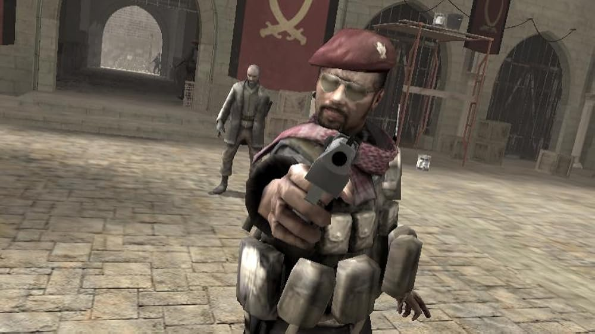
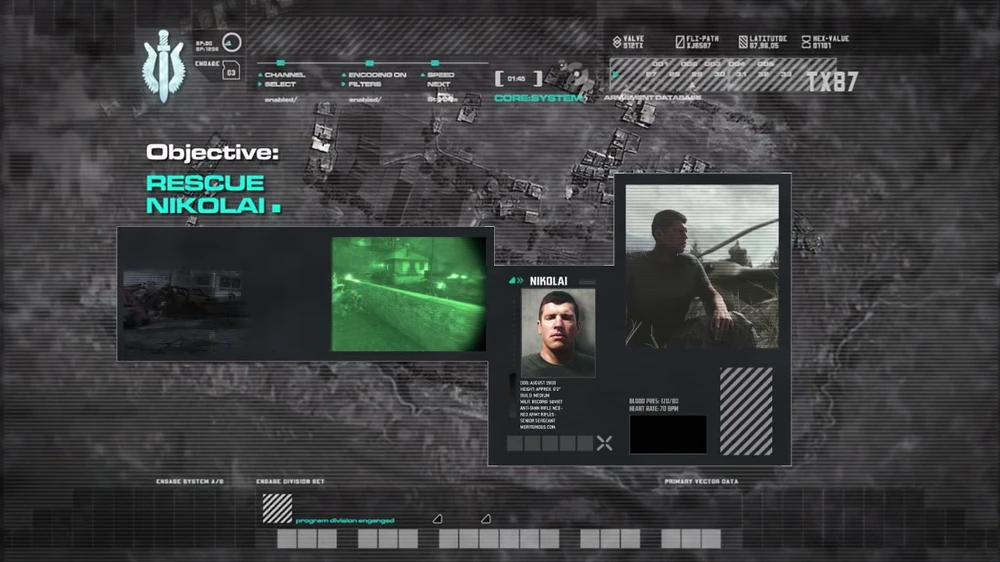

INTRO: Em 2011, Khaled Al-Assad inicia um golpe de Estado no Oriente Médio, e a Rússia está em meio a uma guerra civil entre o governo e os ultranacionalistas. Enquanto isso, Gaz informa ao Capitão John Price, líder da Equipe Bravo, que um novo recruta do SAS, o Sargento John "Soap" MacTavish, está se juntando ao esquadrão.
F.N.G: Soap chega ao centro de treinamento do SAS em Credenhill, Reino Unido, onde tem uma rápida sessão de treinamento com armas com Gaz, conhece o Capitão Price e a unidade, e faz o teste de combate em ambientes fechados (CQB) para completar sua iniciação.
Crew Expendable: A Equipe Bravo segue então para o Estreito de Bering, para procurar um suposto pacote nuclear em um cargueiro estoniano. Após eliminar a equipe de segurança, eles encontram o pacote, mas o fogo de MiG-29 inimigos os impede de prosseguir, levando consigo apenas o manifesto de carga, que aponta Al-Asad como o proprietário do pacote.
The Coup: Para completar sua revolução, Al-Assad executa o presidente da Arábia Saudita, Yasir Al-Fulani.

REC [●]
LOC: 54.3N, 160.4E //
Blackout: Pouco depois disso, Soap, Gaz e Price resgatam o informante russo que forneceu as informações sobre a operação do navio cargueiro, codinome Nikolai, com a ajuda de um antigo amigo de Price e Gaz, o Sargento Kamarov, e seus lealistas russos.

REC [●]
LOC: 54.3N, 160.4E // Caucasus Mountains
A morte de Al-Fulani desencadeia uma invasão do Oriente Médio pela 1ª Força de Reconhecimento do Corpo de Fuzileiros Navais dos Estados Unidos em busca de Al-Assad. Uma equipe composta pelo Tenente Vasquez, o Sargento Griggs, o Sargento Paul Jackson e outros se infiltra em uma pequena cidade e limpa o prédio alvo e, posteriormente, uma estação de TV onde acreditam que Al-Assad esteja transmitindo propaganda, apenas para descobrir que não há sinal dele e a transmissão está em loop.
Enquanto isso, o SAS está a caminho, mas o helicóptero da equipe, Hammer 2-6, é abatido e eles precisam atravessar os campos, tentando escapar dos inimigos, procurando por sobreviventes, mas eventualmente entrando em confronto direto. Depois de chegarem a um celeiro, Soap pega um FIM-92 Stinger e abate o helicóptero que os perseguia. Um AC-130H Spectre chega em seguida para apoiar o SAS até o ponto de extração, primeiro a pé e depois em veículos civis. Depois de chegarem ao ferro-velho, aviões aliados aparecem para resgatá-los.
Os fuzileiros navais partem para resgatar um tanque M1A2 Abrams, codinome War Pig, atolado em um pântano, mas o intenso fogo inimigo leva Jackson a destruir um helicóptero ZPU-4 para que o apoio aéreo possa entrar e concluir a missão. A unidade então forma posições defensivas ao redor do tanque enquanto os engenheiros chegam para consertá-lo e, posteriormente, o escoltam de volta à rodovia. Eles limpam a área avançada, permitindo que o War Pig avance e elimine alguns dos alvos principais. Durante esse processo, Vasquez ordena que Griggs e sua equipe mantenham uma área protegida enquanto ele e Jackson completam a missão. Ao final, eles se encontram com um helicóptero CH-46 Sea Knight para evacuação.
No clímax da invasão, o esquadrão dirige-se à capital, onde acreditam que Al-Asad se refugiou. Após resgatar uma equipe de reconhecimento avançada encurralada, Vasquez é informado de que Al-Asad possui uma ogiva nuclear na área. Eles se apressam para evacuar, mas a escolta da equipe é abatida e eles retornam para resgatar a piloto sobrevivente. Tendo perdido tempo para resgatá-la, não conseguem escapar a tempo e a bomba nuclear explode, matando civis, tropas inimigas e 30.000 militares americanos, incluindo Vasquez e Jackson e possivelmente membros do SEAL Team Six , que acabavam de repassar informações sobre a ogiva. Griggs consegue escapar, pois não estava com a equipe durante o ataque.
Nesse momento, Nikolai informa a Price que Al-Asad pode estar em seu esconderijo no Azerbaijão. O SAS então se dirige para lá, revistando vários prédios na vila antes de encontrar Al-Asad. Price interroga Al-Asad e descobre que o pacote nuclear não lhe pertencia quando Al-Asad recebe uma ligação do líder ultranacionalista russo, Imran Zakhaev. Price então executa Al-Asad.
Price então conta à equipe sobre quando, em 1996, era um tenente designado sob o comando do Capitão MacMillan, em uma missão para assassinar Zakhaev, um ultranacionalista que trocava barras de combustível nuclear por armas. A dupla percorre a cidade fantasma de Pripyat , na Ucrânia, usando roupas camufladas e minimizando o contato com inimigos para não serem detectados. Eventualmente, eles chegam a um hotel onde ficam no último andar por três dias, até a chegada de Zakhaev.
Durante a reunião, Price tenta assassinar Zakhaev com um rifle antimaterial Barrett calibre .50, mas a bala apenas decepa seu braço. Os dois então fogem, perseguidos por helicópteros inimigos, acreditando que Zakhaev morrerá de choque e perda de sangue. No caminho para o ponto de extração, eles abatem um helicóptero, mas este cai em sua direção e fere a perna de MacMillan. Price o carrega o resto do caminho e eles mantêm a posição, aguardando a extração.
De volta aos dias atuais, oito horas após a morte de Al-Asad, o SAS usa cargas explosivas, a minigun de um Blackhawk acidentado e, mais tarde, um míssil FGM-148 Javelin para repelir as forças inimigas até que Griggs e outros fuzileiros navais americanos cheguem no Sea Knight " Gryphon Two-Seven ".
Com o alvo agora voltado para Zakhaev, o verdadeiro dono da arma de destruição em massa que matou os fuzileiros navais no Oriente Médio, o SAS, o Corpo de Fuzileiros Navais dos EUA e lealistas russos realizam uma operação conjunta britânico-americana para tentar capturar seu filho, Victor Zakhaev, em busca de informações sobre o paradeiro do pai. Após uma longa perseguição, a equipe o encurrala no telhado de um prédio de cinco andares e Soap tenta contê-lo, mas acaba se suicidando para evitar a captura .
Enfurecido com a morte do filho, Zakhaev assume o controle de uma instalação de lançamento de mísseis balísticos intercontinentais (ICBMs) nas Montanhas Atlay e ameaça lançar mísseis balísticos nucleares contra os EUA em retaliação. Price lidera então uma operação conjunta britânico-americana para impedir o ataque, mas Griggs se desvia da rota durante o HALO e é capturado. Soap, Gaz e Price então desviam o curso para resgatá-lo antes de cortar a energia da instalação de lançamento para permitir que a Força de Reconhecimento rompa o perímetro . Logo após entrarem e se encontrarem com a Equipe de Atiradores Dois , eles testemunham o lançamento de dois mísseis balísticos intercontinentais nucleares em direção aos EUA, com um número estimado de 41.096.749 vítimas. A equipe, então, corre para dentro e, após neutralizar os blindados inimigos com C4, corta o fio dos dutos de ventilação e entra . Ao chegar à sala de controle, Soap usa os códigos de aborto enviados por Baseplate , o comandante da equipe, para destruir os mísseis em pleno voo antes que atinjam a costa leste dos EUA. Soap, Griggs e Price encontram-se então com Gaz no depósito de veículos, de onde fogem utilizando caminhões russos.
Com veículos inimigos e um helicóptero Mi-24 Hind em seu encalço, Soap, Gaz, Price, Griggs e os sbreviventes seguem pela rodovia russa, mas uma ponte crucial para sua fuga é destruída e eles lutam para fazer uma última resistência desesperada contra os ultranacionalistas. No entanto, um caminhão-tanque explode, incapacitando todos, exceto Griggs, que tenta arrastar Soap para um local seguro, mas é morto no processo pelos guardas de Zakhaev. Zakhaev e dois soldados ultranacionalistas chegam ao local. Gaz consegue se levantar, mas é executado instantaneamente por Zakhaev. O Hind é então explodido por um helicóptero Mi-28 Havoc lealista , distraindo Zakhaev e seus soldados. Enquanto atiram no helicóptero, um ferido Price passa sua M1911 para Soap , dando-lhe a oportunidade de matar Zakhaev e seus guardas . Kamarov e os lealistas logo chegam, e Soap é levado em uma maca enquanto um médico tenta reanimar Price, mas o destino dos dois permanece desconhecido. Entretanto, um repórter anuncia uma série de testes de mísseis nucleares na Rússia e que a busca por um navio no Estreito de Bering foi suspensa, demonstrando que o público não sabe o que realmente aconteceu durante os seis dias de crise.